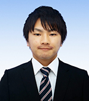
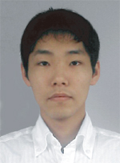
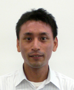

学科について ―卒業生からの一言―
伊豆元敬之さん 九州大学大学院（平成24年3月本科卒業・平成26年3月専攻科修了）
将来どのようなことをしたいのか、胸の内に夢を持っている人もいれば、まだ何も決まっていない人もいると思います。高専、そして制御情報工学科には、専門的な勉強を受けられる環境はもちろん、様々な経験ができるチャンスが沢山あります。多種多様な人々と複雑かつ密接に関わり合って生活する5年間の経験は、好きなものの発見や再確認にきっと繋がるはずです。私は入学当初、進学を考えたことは一度もありませんでしたが、部活動や学園祭実行委員、卒業研究などの経験を通じて最終的に進学することにしました。
やってみたら意外と楽しかった、といった経験が誰しもあると思います。それと同じで、ほとんどの事は挑戦して経験しなければ分からないことです。沢山のチャンスがある高専で、ぜひ多くの挑戦と経験をしてもらいたいと思います。
藤中 亜矢さん 株式会社トクヤマ情報サービス（平成２０年３月卒業）
山邊 辰巳さん 安川電機（平成１９年３月卒業）
竹本 幸生さん 日本放送協会（平成１７年３月卒業）
私は当時、将来したいことが見つからず焦っていましたが、就職を間近に控えた先輩からのアドバイスや、授業、寮生活などで、自分の将来を具体的に考える機会が多くあり、今は入学時に自分が知らなかった業務に就いています。高専、そして制御情報工学科は、このようなキッカケが幾つも落ちていて、自分を見つめ直すことができます。当時の私のように、将来について悩んでいる方は制御情報工学科に入って、様々な知識を身につけてみて下さい。授業の一端から、自分のしたい事がきっとみつかる筈です。
岩崎 正明さん 株式会社ブラテック (平成１０年３月卒業)
高専では勉強よりも陸上部で頑張った思い出が強いですが、部活動、課外活動を通していろんなことにチャレンジできたこと、いろんな方に出会えたことが今の自分の礎、宝物になっています。
何をやりたいか、何が向いているかを見つけるには適している学科だと思いますよ。

私は制御情報工学科を卒業した後宇部高専専攻科へ進学し、その後九州大学大学院へ進学しました。高専在学中から大学院まで、情報学分野の研究を行っています。将来どのようなことをしたいのか、胸の内に夢を持っている人もいれば、まだ何も決まっていない人もいると思います。高専、そして制御情報工学科には、専門的な勉強を受けられる環境はもちろん、様々な経験ができるチャンスが沢山あります。多種多様な人々と複雑かつ密接に関わり合って生活する5年間の経験は、好きなものの発見や再確認にきっと繋がるはずです。私は入学当初、進学を考えたことは一度もありませんでしたが、部活動や学園祭実行委員、卒業研究などの経験を通じて最終的に進学することにしました。
やってみたら意外と楽しかった、といった経験が誰しもあると思います。それと同じで、ほとんどの事は挑戦して経験しなければ分からないことです。沢山のチャンスがある高専で、ぜひ多くの挑戦と経験をしてもらいたいと思います。
私は2008年に宇部高専を卒業し、情報系の会社に就職しました。現在は親会社である㈱トクヤマの基幹システムを構築するという大規模なプロジェクトに携わり、データ管理等を行っています。
制御情報工学科では、機械・電気・情報の３つを組み合わせてモノを制御するということを学びますが、私の場合は、それぞれの専門的な勉強をしていく中で一番興味を持った情報系の道に進みました。自分がどの分野に進みたいのかまだはっきりしていないという人は、この学科で制御を学びながら様々な分野に触れてみるというのもひとつの方法かもしれません。また、勉強以外にも、５年間の寮生活や実行委員、学生会、部活など、そこで得た思い出や友達は一生ものです。高専生活で得たことは、私の中で大きな財産となりました。
皆さんにもぜひ、高専という恵まれた環境でいろんなことにチャレンジし、青春の思い出をたくさん作りながら、自分の進むべき道を見つけてほしいと思います☆
制御情報工学科では、機械・電気・情報の３つを組み合わせてモノを制御するということを学びますが、私の場合は、それぞれの専門的な勉強をしていく中で一番興味を持った情報系の道に進みました。自分がどの分野に進みたいのかまだはっきりしていないという人は、この学科で制御を学びながら様々な分野に触れてみるというのもひとつの方法かもしれません。また、勉強以外にも、５年間の寮生活や実行委員、学生会、部活など、そこで得た思い出や友達は一生ものです。高専生活で得たことは、私の中で大きな財産となりました。
皆さんにもぜひ、高専という恵まれた環境でいろんなことにチャレンジし、青春の思い出をたくさん作りながら、自分の進むべき道を見つけてほしいと思います☆
私は現在、幼いころからの夢であったロボットに関わる仕事に携わっています。学生時代は多くの友人や恩師の方々に支えられ、過ごすことができました。今では自分のやりたかった仕事が出来ており、宇部高専には感謝の気持ちで一杯です。就職してから１番感じたことは、技術者には1つの分野にとらわれず様々な知識が要求されるということでした。制御情報工学科は、機械、電気、情報など学習内容が非常に広いため、会社の中でも様々な場面で高専で学んだ知識を活かすことが出来ます。様々な分野から自分にあった仕事に就ける事も制御情報工学科の魅力だと思います。高専には無限の可能性があります。
皆さんも是非夢の実現に向けて宇部高専で学びましょう！
皆さんも是非夢の実現に向けて宇部高専で学びましょう！

制御情報工学科の授業は、機械、電子、そしてパソコンを使った授業など多岐にわたり、努力次第で自分の興味ある分野のスキルを高めることができます。この学科でいろいろな物に触れることで、自分のしたい事を見つけ、将来進む道を決める大切な時間を過ごせました。私は当時、将来したいことが見つからず焦っていましたが、就職を間近に控えた先輩からのアドバイスや、授業、寮生活などで、自分の将来を具体的に考える機会が多くあり、今は入学時に自分が知らなかった業務に就いています。高専、そして制御情報工学科は、このようなキッカケが幾つも落ちていて、自分を見つめ直すことができます。当時の私のように、将来について悩んでいる方は制御情報工学科に入って、様々な知識を身につけてみて下さい。授業の一端から、自分のしたい事がきっとみつかる筈です。

私は（株）ブラテックという自分で興したIT企業で社長をしています。高専を卒業する時には今のような仕事につくとは全く考えていませんでしたが、高専でインターネットの世界に触れ、もっと勉強したいと大学に行ったことがきっかけになってます。高専では勉強よりも陸上部で頑張った思い出が強いですが、部活動、課外活動を通していろんなことにチャレンジできたこと、いろんな方に出会えたことが今の自分の礎、宝物になっています。
何をやりたいか、何が向いているかを見つけるには適している学科だと思いますよ。